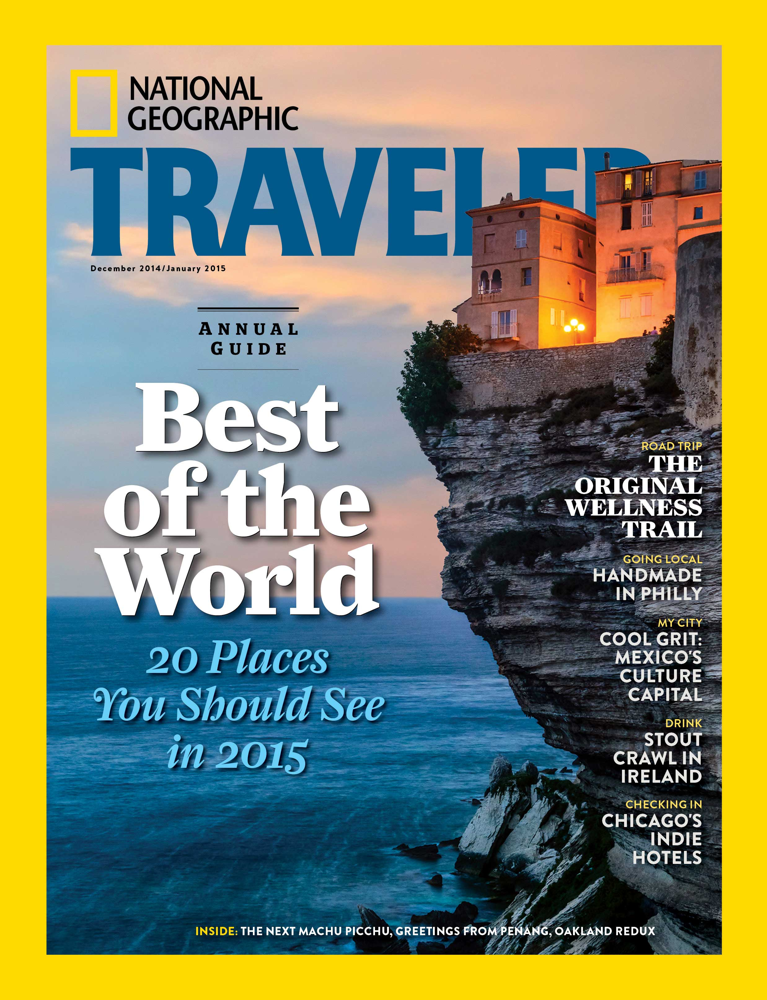

NATIONAL GEOGRAPHIC
February 12th, 2018
National Geographic is the official magazine on the National Geographic Society. The eponymous yellow rectangle has seen virtually no change, much like the interior pages, since it first bordered the front covers of the 1888 launch issue. It show us the timeliness of the graphic design. The cover shows an example of simple branding and the slight warm yellow has become a symbol for photography. The yellow frame works the hardest as a piece of branding, being more recognisable than the logotype.
Even back in the 80's the magazine did have a contents page which worked well using contrast in weight sizes. In the 2000's the serif titles are replaced with a nice bold sans, while the italic text of the intro looks as if it's trying to pull away from the heavy shadow the sans is casting. It's a good example of how the relationship typefaces have with one another impact the feel of a page and can cause visual tension.
The '09 issue does something wonderful with the photography — giving it more strength than anything else on the page, which is easily achieved through the white space, its placement and the way the eye is guided to it. It's much better executed than the photo grid of the '00 issue and leaps far ahead of the '88.
The photo is framed well. The white space on either sides of the logo directs you to the middle of the page, but the logo is quiet and recognisable enough that you happily skim right past it as your vision is gripped by the magnet that is the image.
The first thing we notice is the use of a large serif face for the headers, something we don't see nearly as often these days as most editorial designers would be more likely to use a sans for headers for a cleaner opening.
Also, worth noting is the centred alignment (or justified) body copy, another little ditty from the past that we wouldn't see as often today as open space is better respected these days - though the '88 issue is at least cleaner and more inviting as the type does somewhat play around with sizes while screaming "eighties!".